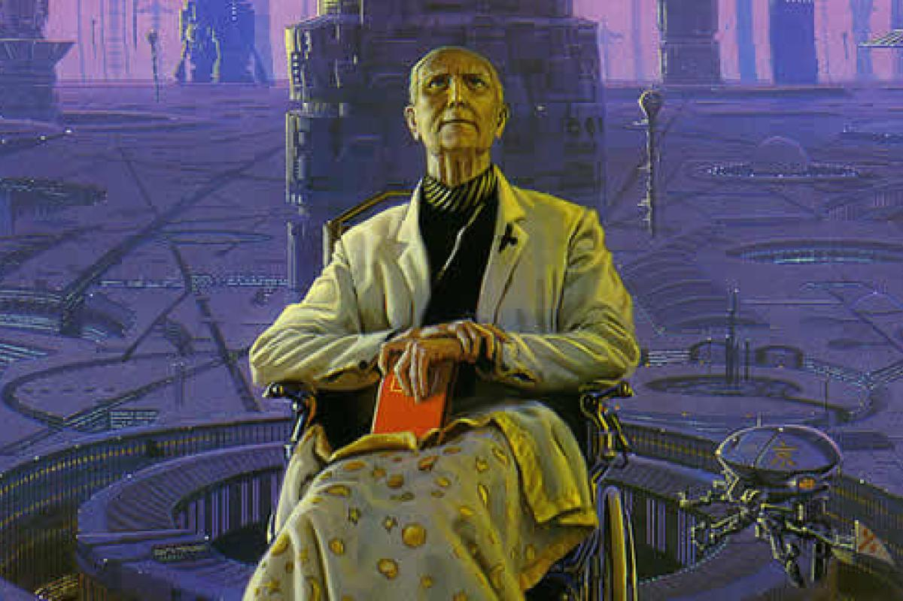

| Карьера | популяризатор, биохимик, писатель-фантаст |
| Дата рождения | 2 января 1920 г. |
| Возраст | 72 года |
| Дата смерти | 6 апреля 1992 г. |
| Место рождения | с. Петровичи, Россия | Сайт писателя |
Айзек Азимов — великий писатель-фантаст, выдуманные миры которого завораживали не одно поколение читателей. Этот талантливый человек написал больше полутысячи книг и рассказов, пробуя себя в разных жанрах: от любимой научной фантастики до детективов и фэнтези. Однако мало кто знает, что в творческой биографии Азимова нашлось место не только для литературной деятельности, но и для науки.
Родился будущий писатель в Белоруссии, в местечке под названием Петровичи, что неподалеку от Могилева, 2 января 1920 года. Родители Азимова, Юда Аронович и Хана-Рахиль Исааковна, трудились мельниками. Мальчика назвали именем покойного деда со стороны матери. Сам Айзек впоследствии будет утверждать, что изначально фамилия Азимовых писалась как Озимовы. Еврейские корни очень почитались в семье Айзека. По его собственным воспоминаниям, на русском языке родители с ним не говорили, первым языком для Азимова стал идиш, а первой литературой — рассказы Шолом-Алейхема.
В 1923 году Азимовы иммигрировали в Соединенные Штаты и поселились в Бруклине, где вскоре открыли собственный кондитерский магазинчик. В школу будущий писатель отправился в пять лет. По правилам детей принимали с шести, однако родители Айзека переправили дату рождения сына на 1919 год, чтобы мальчик пошел в школу на год раньше. В 1935-м Азимов окончил десятый класс и начал учиться в колледже, который, к сожалению, через год закрыли. После этого Айзек отправился в Нью-Йорк, где поступил в Колумбийский университет, выбрав химический факультет.
Тяга к писательству проснулась в Айзеке Азимове рано. Первая попытка написать книгу была в 11 лет: Айзек описывал приключения мальчишек из маленького городка. Сначала творческого задора хватило ненадолго, и Азимов забросил недописанную книжку. Однако некоторое время спустя решил дать почитать первые главы своему товарищу. Каково же было удивление Айзека, когда тот с восторгом потребовал продолжения. Пожалуй, в этот момент Азимов осознал силу писательского таланта, дарованного ему, и начал относиться к этому дару более серьезно.
Первый рассказ Айзека Азимова «В плену у Весты» был опубликован в 1939-м, однако не принес писателю особой известности. Зато следующее короткое произведение под названием «Приход ночи», опубликованное в 1941-м, произвело фурор в среде поклонников фантастического жанра. Это был рассказ о планете, ночь на которой приходит один раз в 2049 лет. В 1968 году рассказ даже назовут лучшим из когда-либо опубликованных в этом жанре. «Приход ночи» впоследствии будет неоднократно включен в многочисленные антологии и сборники, а также переживет две попытки экранизации (к сожалению, неудачных). Сам писатель назовет этот рассказ «водоразделом» в литературной карьере. Интересно, что при этом «Приход ночи» не стал любимым рассказом Азимова в собственном творчестве.
После этого рассказы Айзека Азимова станут долгожданными для поклонников. В мае 1939-го Айзек Азимов приступил к написанию первого повествования о роботах под названием «Робби». Спустя год появляется рассказ «Лжец» - история о роботе, который умел читать мысли людей. В этом произведении Азимов впервые опишет так называемые три закона роботехники. По словам писателя, впервые эти законы сформулировал писатель Джон Кэмпбелл, хотя тот, в свою очередь, настаивал на авторстве Азимова.
Звучат законы следующим образом:
Робот не может причинить вред человеку или своим бездействием допустить, чтобы человеку был причинён вред.
Робот должен повиноваться всем приказам, которые даёт человек, кроме тех случаев, когда эти приказы противоречат Первому Закону.
Робот должен заботиться о своей безопасности в той мере, в которой это не противоречит Первому или Второму Законам.
Тогда же появилось и слово «роботехника» («robotics»), вошедшее впоследствии в словари английского языка. Интересно, что по сложившейся в среде фантастов традиции до Азимова произведения о роботах рассказывали о восстании искусственного интеллекта и о бунтах, направленных против людей. А после выхода первых рассказов Айзека Азимова роботы в литературе начнут подчиняться тем самым трем законам, став более дружелюбными.
В 1942 году писатель приступает к серии фантастических романов «Основание». Айзек Азимов изначально задумывал эту серию самостоятельной, но в 1980-м «Основание» будет объединено с уже написанными рассказами о роботах. В другом варианте перевода на русский язык этой серии дадут название «Академия».
С 1958-го Айзек Азимов станет уделять больше внимания научно-популярному жанру, однако в 1980-м вернется к фантастике и продолжит цикл «Основание». Пожалуй, самыми заметными историями Айзека Азимова, помимо «Основания», стали произведения «Я робот», «Конец вечности», «Они не прилетят», «Сами боги» и «Империя». Сам же писатель выделял рассказы «Последний вопрос», «Двухсотлетний человек» и «Уродливый мальчуган», считая их наиболее удавшимися.
В 1942 году Айзек Азимов встретил первую настоящую любовь. Романтичности этому знакомству придавал и тот факт, что состоялось оно в День святого Валентина. Избранницей писателя стала Гертруда Блюгерман. Влюбленные поженились. Этот брак подарил писателю дочь Робин Джоан и сына Дэвида. В 1970-м супруги развелись. Айзек Азимов недолго оставался в одиночестве: в этом же году писатель сошелся с Джанет Опал Джеппсон, которая работала психиатром. С этой женщиной Азимов познакомился в 1959-м. В 1973 году пара расписалась. Детей от этого брака у Азимова нет.
Писатель ушел из жизни 6 апреля 1992-го. Причиной смерти Айзека Азимова врачи назовут сердечную и почечную недостаточность, осложненную вич-инфекцией, которой писателя случайно заразили в 1983-м во время операции на сердце. Смерть Айзека Азимова потрясла поклонников, которым в наследство остались лишь книги великого писателя.
1949-1985 - «Детектив Элайдж Бейли и робот Дэниел Оливо»
1950 - «Я, Робот»
1950 - «Камешек в небе»
1951 - «Звезды как пыль»
1951 - «Основание»
1952 - «Космические течения»
1955 - «Конец Вечности»
1957 - «Обнажённое солнце»
1958 - «Лакки Старр и кольца Сатурна»
1966 - «Фантастическое путешествие»
1972 - «Сами боги»
1976 - «Двухсотлетний человек»